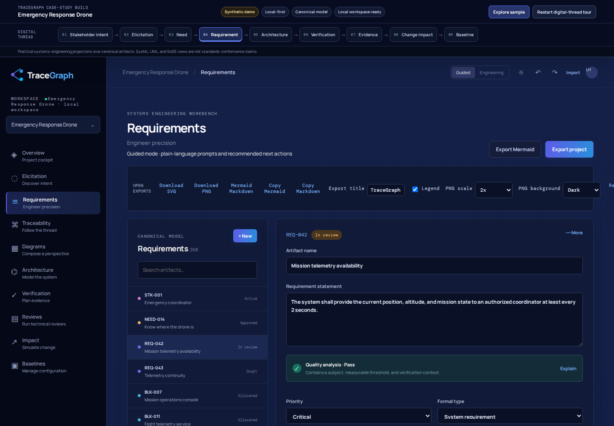
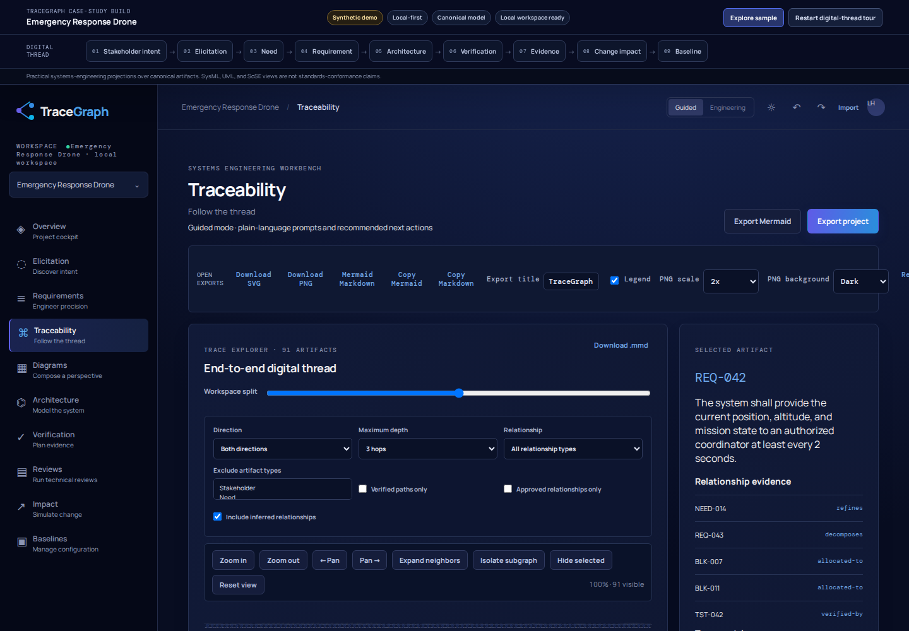
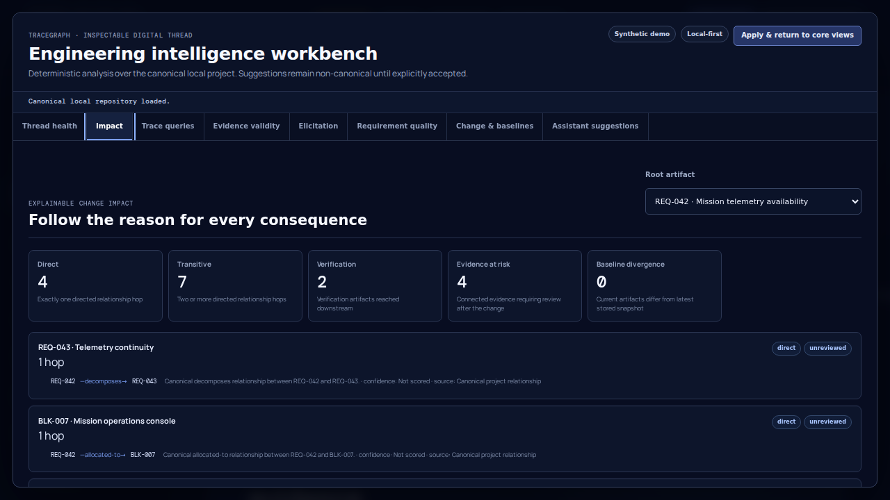
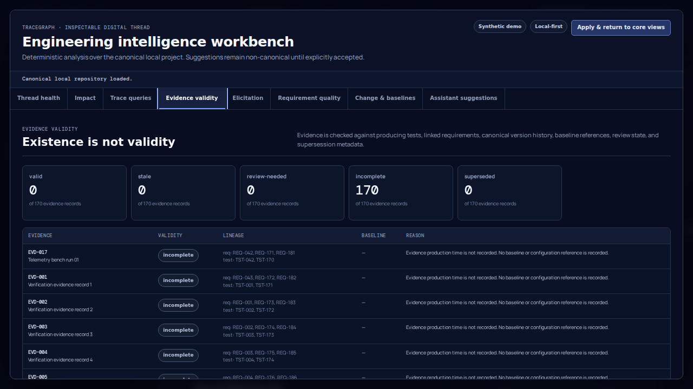

See the real workbench in motion.
The video is recorded by Playwright against the repository's live application using the deterministic Emergency Response Drone sample. No mock video UI is used.
From requirement to consequence.
Selected views show the core thread and the deeper engineering-intelligence layer. The full screenshot directory contains thirteen deterministic captures.




Evidence, not business claims.
These observations come from repository CI and are included to make the case study inspectable. They are not customer, productivity, certification, compliance, or uptime claims.
Use the demo as evidence.
Pair the walkthrough with the one-pager, messaging guide, presenter script, and full screenshot set.
Scope note. TraceGraph is presented here as an approachable local-first requirements engineering and digital-thread workbench. SysML/UML/SoSE surfaces are practical projections rather than standards-complete editors. Evidence-validity signals are structural provenance and freshness assessments, not cryptographic attestation or certification judgments.